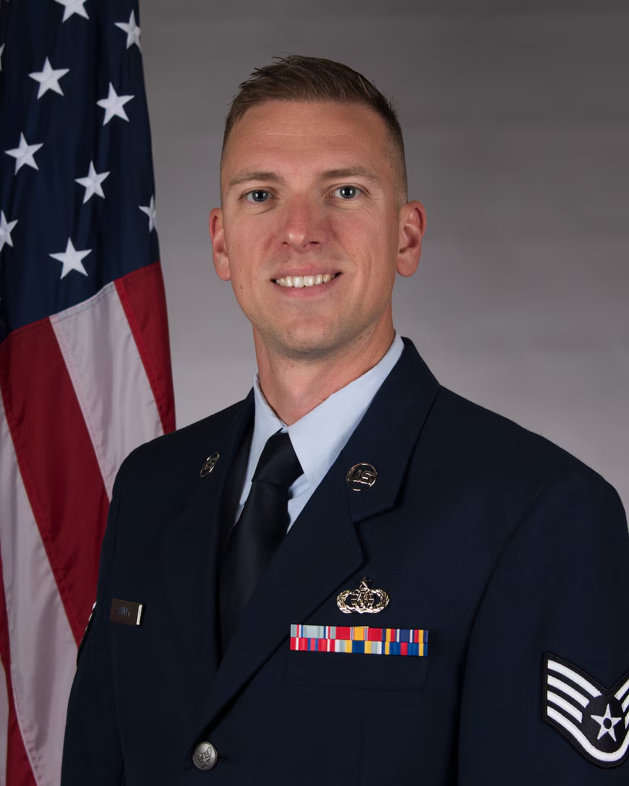
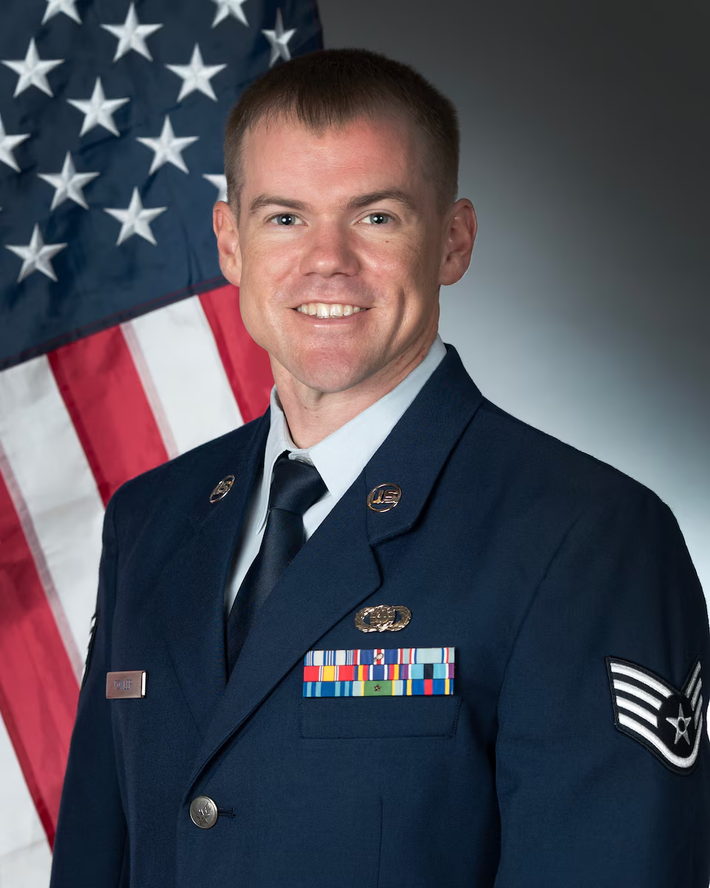

Opener 2007
McMillen
September 6–12, 2026
McMillen
Key/Stafford Smith
Bernstein/Grundman
Ives/Schuman/Rhoads
Pryor/MacKenzie
Featuring SSgt Evan Sankey, trombone

Staff Sergeant Evan Sankey is a trombonist with the Band of the West. SSgt Sankey holds degrees in trombone performance from the University of North Texas and the University of Texas at Austin.
As a solo performer, SSgt Sankey was named winner of the Big XII Yamaha Xeno Tenor Trombone competition, the University of North Texas Concerto Competition, and was named a finalist in the American Trombone Workshop’s National Solo Competition Division III as well as the Larry Wiehe International Trombone Competition. He has been a featured soloist with the San Jacinto College Central Brass Band, the Austin Symphonic Band, the UNT Symphony Orchestra, and the University of Central Arkansas Trombone Choir. Additionally, SSgt Sankey has performed in many professional chamber and large ensembles including Prismatx (out of Austin, Texas), the award-winning University of Texas Trombone Choir, the Lone Star Brass Orchestra, the Lawton Symphony Orchestra, and the Round Rock Symphony Orchestra.
Prior to enlistment, SSgt Sankey served as Assistant Professor of Low Brass at Texas Lutheran University and the graduate teaching assistant for the trombone studio at the University of Texas at Austin. Additional teaching duties included faculty positions with the Longhorn Music Camp and the Texas Lutheran University Summer Music Academy. Past teachers of SSgt Sankey include Dr. Vern Kagarice, Jan Kagarice, Tony Baker, and Dr. Nathaniel Brickens.
2011 - Bachelor of Music Performance - University of North Texas
2013 - Master of Music - University of North Texas
2017 - Doctor of Musical Arts - The University of Texas at Austin
2022 - CMSAF Bud Andrews Airman Leadership School - Scott Air Force Base, IL
1. Jan 2019 – March 2019, Student, Basic Military Training, JBSA Lackland, Texas
2. March 2019 – October 2022, USAF Band of Mid-America
3. October 2022 – October 2024, USAF Band of the West, JBSA-Lackland, Texas
4. October 2024 – April 2025, 379th Air Expeditionary Wing, Al Udeid AB, Qatar
5. April 2025 - Present, USAF Band of the West, JBSA-Lackland, Texas
Air and Space Commendation Medal with 2 Oak Leaf Clusters
AF Good Conduct Medal with 1 Oak Leaf Cluster
National Defense Service Medal
Global War on Terrorism Expeditionary Medal
Global War on Terrorism Service Medal
Basic Military Training Honor Graduate Ribbon
Airman First Class - 8 January 2019
Senior Airman - 8 November 2020
Staff Sergeant - 1 July 2022
current as of 13 May 26
arr. Dickey
Ewazen
Featuring SSgt Burton Fowler, bassoon

Staff Sergeant Burton Fowler is a bassoonist with the United States Air Force Band of the West. A native of Texas, he graduated from Rowlett High School in 2010 and earned his Bachelor’s degree in Music Education/Performance at East Texas A&M University in 2014. He then continued his music education at The University of North Texas, graduating with an Artist Diploma in 2016.
2024: Airman Leadership School, JBSA-Lackland, Texas
2017: Basic Military Training, JBSA-Lackland, Texas
2016: Artist Diploma, University of North Texas, Denton
2014: Bachelor of Music Education and Performance, Texas A&M University-Commerce
Feb 2017 - Apr 2017, student, Basic Military Training, JBSA-Lackland, Texas
Apr 2017 - Present, USAF Band of the West, JBSA-Lackland, Texas
Achievement Medal
Outstanding Unit Award
Good Conduct Medal
Global War on Terrorism Service Medal
Humanitarian Service Medal
Longevity of Service
USAF NCO PME Graduate Ribbon
Small Arms Airman Marksman Ribbon
National Defense Service Medal
Air Force Training Ribbon
University of North Texas Concerto Competition finalist, Hummel – 1. Allegro Moderato 2015
Texas A&M Commerce Concerto Competition winner, Weber – Hungarian Andante and Rondo 2013
Staff Sergeant - 01 September 2024
arr. MacKenzie
arr. MacKenzie
Ticheli
arr. Smith
arr. MacKenzie
arr. Smith
Sousa
The United States Air Force Band of the West is the Air Force's premier musical organization serving the southern United States. Based at Joint Base San Antonio–Lackland, Texas, its professional Airmen-musicians represent the United States Air Force through performances that honor military service, strengthen community relationships, and inspire future generations.
Each year, the Band of the West presents hundreds of performances throughout Texas, Oklahoma, Louisiana, Mississippi, Alabama, Georgia, Florida, Puerto Rico, and beyond. The organization includes the Concert Band, Ceremonial Marching Band, Dimensions in Blue, Top Flight, Velocity, and several chamber ensembles, allowing the band to perform music ranging from classical masterworks and military ceremonies to jazz and popular music.
Tracing its lineage to 1941, the Band of the West has earned a national reputation for musical excellence while serving audiences at military ceremonies, civic events, schools, and concert halls throughout the region.
Commander & Conductor
Biography
Captain David Neil C. Regner is the commander and conductor of the United States Air Force Band of the West, Joint Base San Antonio, Texas. Under his leadership, 60 airman-musicians perform more than 300 events each year throughout the Southeast to honor America’s service members and veterans, inspire young people to serve, and connect the public with their Air and Space Forces.
He is responsible for organizing, training, and equipping the unit to communicate Department of the Air Force strategic messages with Americans at home and to strengthen international partnerships when deployed abroad.
Capt. Regner commissioned as a graduate of Officer Training School in August 2017. Since then, he has led Air Force bands in community, diplomatic, and ceremonial missions in 10 countries, 33 states, and Washington D.C, reaching a combined broadcast and live audience of over 50 million people.
A native of West Orange, New Jersey, Captain Regner served four years as a high school band director at Arlington High School in LaGrangeville, New York prior to joining the Air Force. He earned a Bachelor of Music degree in music education from Rutgers University, where he studied with Darryl Bott, and his Master of Music degree in conducting from Northwestern University, where he studied with Mallory Thompson.
2010 Bachelor of Music, Music Education, Rutgers University, N.J.
2013 Master of Music, Wind Conducting, Northwestern University, Ill.
2017 Air Force Officer Training School, Maxwell Air Force Base, Ala.
2018 Public Affairs Qualification Course, Defense Information School, Fort Meade, Md.
2022 Squadron Officer School, Air University, Maxwell Air Force Base, Ala.
1. September 2017 - June 2021, Flight Commander, USAF Heritage of America Band, Joint Base Langley-Eustis, Va.
2. June 2021 - July 2022, Commander, USAF Heritage of America Band, Joint Base Langley-Eustis, Va.
3. July 2022 - July 2025, Flight Commander, The United States Air Force Band, Joint Base Anacostia-Bolling, Va. (Officer in Charge, U.S. Air Forces Central Command Band, Al Udeid Air Base, Qatar)
4. July 2025 - Present, Commander, USAF Band of the West, Joint Base San Antonio-Lackland, Texas
Meritorious Service Medal
Air Force Commendation Medal with one oak leaf cluster
National Defense Service Medal
Global War on Terrorism Expeditionary Medal
Global War on Terrorism Service Medal
2018 Air Combat Command Public Affairs Company Grade Officer of the Year
2020 Air Combat Command Public Affairs Company Grade Officer of the Year
2024 11th Wing Company Grade Officer of the Year
Second Lieutenant August 31, 2017
First Lieutenant August 31, 2019
Captain August 31, 2021
Current as of 18 May 2026
Associate Conductor
Biography
Second Lieutenant Benjamin Andrew “Drew” Eary serves as Flight Commander and Associate Conductor of the United States Air Force Band of the West, Lackland Air Force Base, Texas. Lt Eary assists the Commander in leading 60 Airmen in performances and engagements throughout a 7-state area of responsibility, including affiliated US territories.
He has led tours and performances across the Southern United States, programming messaging and performances for the Band of the West to inspire and connect with the American public. He also has represented the USAF in diplomatic and ceremonial missions both at home and in partnership with the Argentinian Air Force in Buenos Aires, Argentina.
Originally from Peoria, Arizona, Lt. Eary received the Doctor of Musical Arts degree in Wind Band Conducting from The University of Texas at Austin. He earned a Master of Music in Conducting from Columbus State University and a Bachelor of Music in Music Education and Clarinet Performance from The University of Arizona. His conducting teachers are Professor Jerry Junkin, Dr. Jamie L. Nix, Professor Jay C. Rees, and Professor Gregg Hanson.
Before pursuing graduate studies, Lt Eary was proudly the first Director of Bands at Casteel High School in Queen Creek, Arizona.
Lt Eary has appeared as a featured guest conductor with the United States Army Band “Pershing’s Own”, the Austin Brass Collective, and as a clinician for region honor bands and ensembles in multiple states. He was also a Conducting Fellow for the H. Robert Reynolds Conducting Institute at the 75th Annual Midwest Clinic in Chicago, Illinois and was named a finalist for the 2021 American Prize in Conducting.
Lt Eary is active as a transcriber and arranger, conducting the premiere of his transcription of the Wind Band version of Maria Sigfusdottir’s Grammy-nominated “Oceans” in 2023.
2014 Bachelor of Music in Music Education and Bachelor of Music in Clarinet Performance, The University of Arizona, Ariz.
2021 Master of Music in Wind Band Conducting, Columbus State University, Ga.
2024 Doctor of Musical Arts in Wind Band Conducting, The University of Texas at Austin, Texas
2024 Officer Training School, Maxwell Air Force Base, Ala.
2026 Public Affairs & Communication Strategy Qualification Course, Fort Meade, Md.
1. July 2024 - September 2024, Student, Officer Training School, Maxwell Air Force Base, Ala.
2. October 2024 - Present, Flight Commander, USAF Band of the West, Joint Base San Antonio-Lackland, Texas
Second Lieutenant 27 September 2024
*denotes section leader
Staff Sergeant Teresa Perrin, USAF*
Rachel Woolf
Staff Sergeant Kathryn Bloise, USAF*
Technical Sergeant Michele Von Haugg, USAF
Staff Sergeant Sarah Smelser, USAF
Staff Sergeant Julian Bohorquez, USAF
Senior Airman Mark Allen, USAF*
Senior Airman Dalton Tran, USAF
Staff Sergeant Burton Fowler, USAF
Senior Airman Oleksandr Kashlyuk, USAF*
Staff Sergeant Jason Galbraith, USAF*
Airman First Class Bryson Vanderwel, USAF
Brian Christensen
Rami El-Farrah
Master Sergeant Quincy Garner, USAF
Technical Sergeant Laura Kluga, USAF
Technical Sergeant Justin Weisenborn, USAF
Staff Sergeant Alan Matteri, USAF
Airman First Class Luis Clebsch, USAF*
Staff Sergeant Derek Akers, USAF
Staff Sergeant Rose MacKenzie, USAF
Airman First Class Emma Nixon, USAF*
Staff Sergeant Evan Sankey, USAF
Airman First Class Nathan Gardner, USAF*
Steve Peterson
Corey Sansolo
Staff Sergeant Tom Mahovsky, USAF*
Staff Sergeant Bruno Gutierrez, USAF*
Airman First Class Ben Pozo, USAF
Master Sergeant Jesse Thompson, USAF
Staff Sergeant Jack McDonald, USAF
Technical Sergeant Levi Cull, USAF
Technical Sergeant Benjamin Johnson, USAF
Senior Airman Ross Hussong, USAF
Airman First Class Wyatt Hatch, USAF*
Master Sergeant Kelcey McDonald, USAF
Airman First Class Jermaine Allison
Airman First Class Gabriel Ottomanelli, USAF
Technical Sergeant Justis MacKenzie, USAF
Technical Sergeant Ryan Rager, USAF